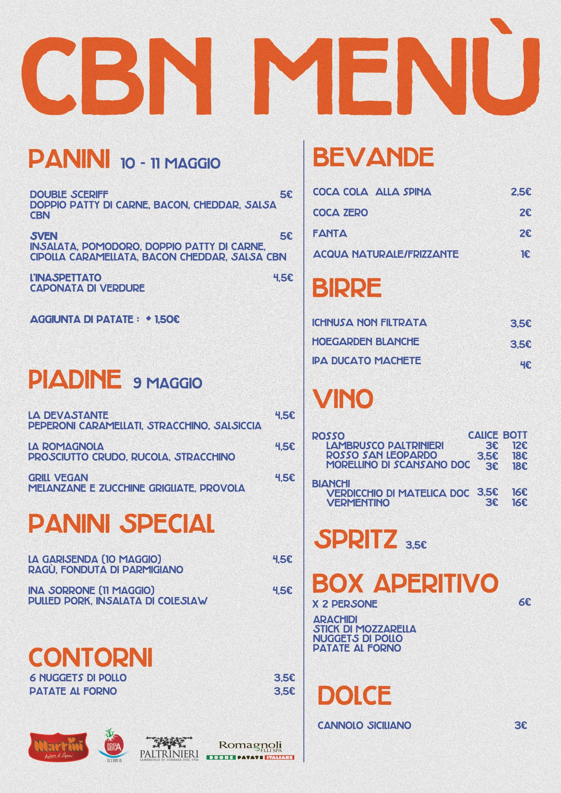

<mat-progress-bar *ngIf="!menuLoaded" mode="indeterminate"></mat-progress-bar>
<div [hidden]="!menuLoaded">
    <div style="background-color: #fef0d3; height: 16px;"></div>
    <div style="background-color: #fef0d3">
        
    </div>
    <div style="background-color: #fef0d3; height: 14px;"></div>
    <app-footer></app-footer>
</div>